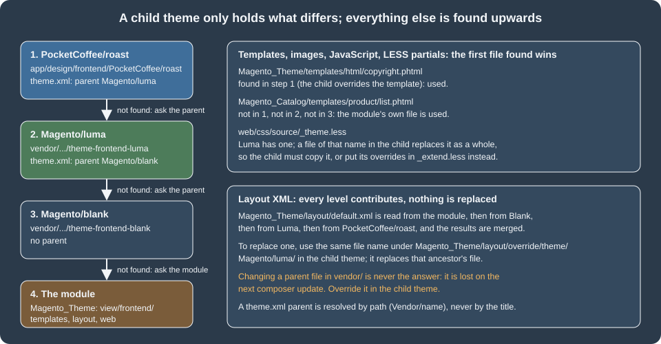

Frontend: Luma Themes
|
This content was generated with the assistance of AI and should be verified against the official documentation before being relied on in production. |
This page was written against Magento 2.4.9 (generally available 2026-05-12) and checked on 2026-10-27. The theme was built and exercised on Mage-OS 3.6.0, the community distribution of the Magento Open Source 2.4.9 code base (PHP 8.5.12, developer mode),
which ships the same Magento/blank and Magento/luma themes as Magento Open Source; the documentation quoted is Adobe’s frontend guide. Luma themes apply to Magento Open Source, to Adobe Commerce on-premises and to Adobe Commerce on cloud infrastructure.
They do not apply to Adobe Commerce as a Cloud Service (ACCS), whose documentation states that it does not support Luma storefronts: its storefront is the Commerce Storefront on Edge Delivery Services. No statement about deprecating Luma
for Open Source or the PaaS editions was found in Adobe’s documentation on the check date. The alternatives (Hyvä, PWA Studio, Edge Delivery) are on the page Frontend: Hyvä, PWA Studio and Edge Delivery.
Luma is the storefront most Magento 2 shops still run, and thousands of extensions assume it. A Luma-based storefront is a tree of PHP templates, layout XML, LESS, RequireJS modules and Knockout templates, resolved through a chain of themes. This page explains the chain
(Magento/blank, then Magento/luma, then your theme), builds the Pocket Coffee child theme PocketCoffee/roast step by step, and ends with the static content deployment that makes it fast in production. It assumes the
module basics of Module Anatomy and the layout and template concepts of Routing, Controllers, Blocks, Layouts and Templates.
The private content section that the theme’s component displays is built on Caching, Indexing and Performance.
Blank and Luma
Magento ships two storefront themes. Both live in Composer packages (magento/theme-frontend-blank and magento/theme-frontend-luma; mage-os/theme-frontend-blank|luma on Mage-OS) and register themselves under the area frontend.
| Theme | What it is |
|---|---|
|
The base theme: the complete set of templates from the modules, the UI library (a LESS library of mixins and variables), a plain, neutral look and the responsive layout. It has no parent. It is the theme to inherit from when you want to design everything yourself. |
|
A demonstration theme that inherits from Blank and adds the look most people know as "Magento": its own typography, colours, icons, buttons, navigation, product page and checkout styles, and overrides of module templates in more than twenty module directories such as |
The responsive breakpoints come from the UI library, in lib/web/css/source/lib/variables/_responsive.less: @screen__xxs 320px, @screen__xs 480px, @screen__s 640px, @screen__m 768px, @screen__l 1024px and @screen__xl 1440px. The theme compiles two stylesheets, styles-m.css for the mobile and
small screens and styles-l.css for the desktop (from 768px), which the browser loads with media queries.
A theme is chosen per store view (Content > Design > Configuration), optionally with exceptions per user agent. A child theme normally inherits from Luma or Blank; this page builds a child of Luma, because most extensions are tested against it.
The structure of a theme
The Pocket Coffee theme is a directory under app/design/frontend/<Vendor>/<name>. (When it is distributed with Composer, the same files live in a package of type magento2-theme.) This is the whole file list of the tested theme:
app/design/frontend/PocketCoffee/roast/
registration.php
theme.xml
composer.json
etc/view.xml
media/preview.jpg
requirejs-config.js
web/css/source/_extend.less
web/images/logo.svg
Magento_Theme/
layout/default.xml
templates/roast-badge.phtml
templates/html/copyright.phtml
web/js/roast-badge.js
web/js/roast-badge-mixin.js
web/template/roast-badge.htmlregistration.php and composer.json
<?php
declare(strict_types=1);
use Magento\Framework\Component\ComponentRegistrar;
ComponentRegistrar::register(ComponentRegistrar::THEME, 'frontend/PocketCoffee/roast', __DIR__);ComponentRegistrar::THEME with the name frontend/<Vendor>/<name>: the area (frontend or adminhtml), the vendor directory and the theme directory. The path in this string is how everything else refers to the theme (PocketCoffee/roast). The Composer file makes the theme installable:
{
"name": "pocketcoffee/theme-frontend-roast",
"description": "Pocket Coffee storefront theme, a child of Magento Luma",
"type": "magento2-theme",
"license": "proprietary",
"require": {
"php": "~8.3.0||~8.4.0||~8.5.0",
"magento/framework": "*",
"magento/theme-frontend-luma": "*"
},
"autoload": {
"files": ["registration.php"]
}
}type must be magento2-theme for the Magento Composer installer to put the package in the right place; autoload.files loads the registration; the requirement on magento/theme-frontend-luma documents (and enforces) the parent. When the theme is in app/design, composer.json is optional.
theme.xml
<?xml version="1.0"?>
<theme xmlns:xsi="http://www.w3.org/2001/XMLSchema-instance"
xsi:noNamespaceSchemaLocation="urn:magento:framework:Config/etc/theme.xsd">
<title>Pocket Coffee Roast</title>
<parent>Magento/luma</parent>
<media>
<preview_image>media/preview.jpg</preview_image>
</media>
</theme>title is shown in the Admin; parent is the path Vendor/name of another theme (never its title), and the parent may belong to another vendor; media/preview_image is a path relative to the theme, copied into the media storage when the theme is registered.
Without parent the theme stands alone and has to provide everything itself. The schema is urn:magento:framework:Config/etc/theme.xsd; the file validated with xmllint --schema on the test store.
A pitfall found while testing: the preview image has to be a real image. The first version of the theme shipped a four-byte placeholder named preview.jpg, and bin/magento setup:upgrade failed in "Running data recurring" with
Warning: Cannot use bool as array in .../framework/Image/Adapter/AbstractAdapter.php, because the image adapter (GD2 on the test store) could not read the file. Any valid JPEG or PNG makes it pass; the one in the theme was produced with imagejpeg() and is 400 x 300 pixels.
Registering and applying the theme
bin/magento setup:upgrade (or bin/magento setup:upgrade --keep-generated) scans app/design and the Composer packages and fills the table theme. On the test store it produced:
theme_id parent_id theme_path theme_title area
1 NULL Magento/blank Magento Blank frontend
2 NULL Magento/backend Magento 2 backend adminhtml
3 2 MageOS/m137-admin-theme M137 Admin Theme adminhtml
4 1 Magento/luma Magento Luma frontend
5 4 PocketCoffee/roast Pocket Coffee Roast frontendThe parent_id column is the inheritance chain: 5 (roast) to 4 (Luma) to 1 (Blank). To apply the theme, open Content > Design > Configuration, edit the scope (global, website or store view) and choose it under Applied Theme. From the command line the same
setting is the configuration path design/theme/theme_id:
bin/magento config:set design/theme/theme_id 5 # 5 is theme_id of PocketCoffee/roast in the theme table
bin/magento cache:flushThe test store keeps Luma as its default theme. To check the Pocket Coffee theme, design/theme/theme_id was set to 5 for a moment, the home page was fetched and the setting was removed again (its value in core_config_data is absent for the default Luma theme).
etc/view.xml
etc/view.xml holds the presentation settings that are data rather than code: the sizes of catalog images and values such as the gallery options. A theme’s file is merged with its ancestors', so the child lists only what it changes.
<?xml version="1.0"?>
<view xmlns:xsi="http://www.w3.org/2001/XMLSchema-instance"
xsi:noNamespaceSchemaLocation="urn:magento:framework:Config/etc/view.xsd">
<media>
<images module="Magento_Catalog">
<image id="category_page_grid" type="small_image">
<width>300</width>
<height>300</height>
</image>
</images>
</media>
<vars module="Magento_Catalog">
<var name="gallery">
<var name="nav">thumbs</var>
<var name="loop">false</var>
</var>
</vars>
</view>Here the category grid image is 300 x 300 pixels instead of Luma’s 240 x 300. Each image has an id (the name templates use, as in $imageHelper->init($product, 'category_page_grid')), a type (image, small_image, thumbnail, swatch_image and swatch_thumb) and the optional width, height, constrain, aspect_ratio, frame, transparency and background elements. The vars element sets values read with $block->getVar() in templates and JavaScript. After a change run
bin/magento catalog:images:resize (a consumer, media.storage.catalog.image.resize, does the same asynchronously).
Inheritance and fallback

Adobe’s rules, from the inheritance page of the frontend guide:
-
Templates (
.phtml) and static files (images, JavaScript, CSS, fonts, HTML templates) use fallback: the system looks in the current theme, then in each ancestor in turn, then in the module’sview/frontend(orview/base) directory, and uses the first file it finds. To override one, place a file with the same relative path in your theme. For a template the path is<theme>/<Vendor>_<Module>/templates/<path>; for module static files<theme>/<Vendor>_<Module>/web/<path>; for theme-level static files<theme>/web/<path>; with ani18n/<locale>folder in front for locale-specific files. -
Layout XML does not use fallback. All layout files of a name are collected and merged: the module’s, then each ancestor’s from the most distant one, then the theme’s. The recommended way to customise is to extend with a file in
<theme>/<Vendor>_<Module>/layout/that only adds or modifies instructions (areferenceBlockwithremove="true"removes a block). Overriding is possible but discouraged:<theme>/<Vendor>_<Module>/layout/override/base/<layout>.xmlreplaces the module’s file, and<theme>/<Vendor>_<Module>/layout/override/theme/<Parent_Vendor>/<parent_theme>/<layout>.xmlreplaces the file of an ancestor theme. Page layouts usepage_layoutinstead oflayout. -
The parent is "indirectly active": it never needs to be applied to a store view for the child to use it.
Never edit files in vendor/: they are replaced by the next composer update. Everything below overrides or extends from the child theme.
A layout extension and a template
The theme adds a block to the header panel of every page by extending the default.xml of Magento_Theme. The file in the theme contains only the new instruction; the rest of the page’s layout comes from the modules and the ancestors.
<?xml version="1.0"?>
<page xmlns:xsi="http://www.w3.org/2001/XMLSchema-instance"
xsi:noNamespaceSchemaLocation="urn:magento:framework:View/Layout/etc/page_configuration.xsd">
<body>
<referenceContainer name="header.panel">
<block class="Magento\Framework\View\Element\Template"
name="pocketcoffee.roast.badge"
template="Magento_Theme::roast-badge.phtml"
before="-"/>
</referenceContainer>
</body>
</page><?php
/** @var \Magento\Framework\View\Element\Template $block */
/** @var \Magento\Framework\Escaper $escaper */
?>
<div class="pocketcoffee-roast-badge" data-bind="scope: 'roastBadge'">
<!-- ko template: getTemplate() --><!-- /ko -->
</div>
<script type="text/x-magento-init">
{
"*": {
"Magento_Ui/js/core/app": {
"components": {
"roastBadge": {
"component": "roastBadge"
}
}
}
}
}
</script>The template is a plain block template in the theme (Magento_Theme::roast-badge.phtml resolves to <theme>/Magento_Theme/templates/roast-badge.phtml). It has a Knockout scope, a placeholder that the component fills, and an initialisation script of type text/x-magento-init, the form that is JSON data, not executable script, so it needs no exception in the content security policy (executable inline scripts do; see the CSP documentation).
To override an existing template, place a file at the same relative path. Luma’s footer uses Magento_Theme/templates/html/copyright.phtml; the theme’s copy appends a phrase:
<?php
/** @var \Magento\Theme\Block\Html\Footer $block */
?>
<small class="copyright">
<span><?= $block->escapeHtml($block->getCopyright()) ?> · <?= $block->escapeHtml(__('Roasted in small batches')) ?></span>
</small>On the test store with the theme applied, the home page’s HTML contained the badge inside div.panel.header, the footer ended with "Copyright (c) 2013-present Magento, Inc. All rights reserved. · Roasted in small batches", and the page loaded /static/version.../frontend/PocketCoffee/roast/en_US/css/styles-m.css, images/logo.svg and requirejs-config.js.
The logo is replaced by a file of the same name in the theme’s web/images/ (Luma’s logo is images/logo.svg too; the Admin setting Content > Design > Configuration > Header > Logo Image takes precedence over a file).
The same fallback gives email templates: a copy of Magento_Email/email/footer.html or of the transactional templates under <theme>/Magento_<Module>/email/ overrides the module’s.
Template debugging is built in: bin/magento dev:template-hints:enable (and disable, status) shows which file produced each block, bin/magento cache:flush afterwards.
LESS
The files
Blank’s web/css/ holds the entry points styles-m.less and styles-l.less. Each one imports the UI library, the theme’s source files and, using the Magento directive //@magento_import, the same-named partial of every module and theme in the chain. The order, simplified, from Blank’s styles-m.less:
@import 'source/lib/_lib.less'; // the UI library: mixins and default variables
@import 'source/_sources.less'; // the theme's styles: typography, layout, tables, forms, buttons, ...
//@magento_import 'source/_module.less'; // every module's styles (Magento_Theme/web/css/source/_module.less, ...)
//@magento_import 'source/_widgets.less'; // widgets
@import 'source/_theme.less'; // the theme's variable overrides
@import 'source/lib/_responsive.less'; // the media-query mixins
//@magento_import 'source/_extend.less'; // theme additions, imported lastThe partials that you create in a child theme (in web/css/source/):
| File | Purpose |
|---|---|
|
Overrides the variables of the UI library. A file with this name in a child theme replaces the parent’s file, it does not extend it (see the pitfall below). |
|
Additions: new rules and mixin uses, imported last, after the parent’s styles. Luma and Blank have none, so it is free to use in a child of either. |
|
Replacements of the corresponding parent partial, by the same fallback rule. |
|
Styles for one module’s blocks. Blank and Luma use these; a child theme can override a module’s file or add rules in |
Overriding variables in a child of Luma
The Pocket Coffee theme changes the page background, the link colours and the primary button. The straightforward-looking way, a _theme.less with the new variables, was tried first and failed on the test store:
variable @copyright__background-color is undefined in file
.../var/view_preprocessed/pub/static/frontend/PocketCoffee/roast/en_US/Magento_Theme/css/source/_module.less in _module.less on line 284The cause is the fallback rule: the theme’s _theme.less replaced Luma’s, which defines hundreds of variables (including @copyright__background-color), so every module style that uses one of them broke, and the CSS request returned the compiler error (HTTP 404 with the message) instead of a stylesheet.
Blank’s own _theme.less carries a comment that a theme file should only declare overrides of existing variables, and that new variables belong in the theme’s local files; for a child of Luma there are two valid ways: copy Luma’s _theme.less into the theme and edit it (it then has to be merged by hand on Luma upgrades), or use LESS’s lazy evaluation:
variables are not evaluated in order, the last definition in a scope wins, and _extend.less is imported last. So the overrides go to _extend.less:
// _extend.less is imported last, after Luma's _theme.less, so with LESS lazy evaluation
// (the last definition of a variable in a scope wins) these lines re-define Luma's variables.
@page__background-color: #fbf6ee;
@link__color: #6b3e26;
@link__hover__color: #8c5233;
@button-primary__background: #6b3e26;
@button-primary__hover__background: #4f2c1a;
@button-primary__border: 1px solid #4f2c1a;
// Rules added on top of Luma, after every module's styles.
.pocketcoffee-badge {
background: @color-white;
border: 1px solid @link__color;
border-radius: 3px;
color: @link__color;
display: inline-block;
font-size: 1.2rem;
padding: .2rem .8rem;
&._member {
background: @link__color;
color: @color-white;
}
}
.media-width(@extremum, @break) when (@extremum = 'max') and (@break = @screen__s) {
.pocketcoffee-badge {
display: block;
text-align: center;
}
}Compiled by the server on the test store, the result confirmed it: a:hover changed from Luma’s #006bb4 to #8c5233, the rules .pocketcoffee-badge and .pocketcoffee-badge._member appeared in styles-m.css, and the mobile rule was emitted inside @media only screen and (max-width: 639px), because .media-width(@extremum, @break) with 'max' and @screen__s is the UI library’s way to write a breakpoint (@screen__s is 640px, the media query says 639px).
The UI library offers many more mixins (.lib-css, .lib-font-size, .lib-button-primary, …), documented in the "UI library" pages of the frontend guide.
How the LESS becomes CSS
| Mode | Behaviour |
|---|---|
Server-side compilation (default, |
Magento compiles the LESS with |
Client-side compilation |
The browser compiles LESS with Less.js (4.2.2 in 2.4.9). Only for debugging. |
Grunt |
The repository carries |
Production |
|
bin/magento dev:source-theme:deploy [--theme=Vendor/name] [--locale=en_US] [--area=frontend] publishes the LESS sources of a theme, by default css/styles-m and css/styles-l, so that Grunt or an IDE can work on them. The two commands rm -rf pub/static/frontend/Vendor var/view_preprocessed followed by bin/magento cache:flush are the standard reset when a stylesheet looks stale in developer mode. The Magento 2 theme design book of 2016 builds its workflow on Grunt and
LESS in the same way and is otherwise outdated for today’s installs (it assumes Magento Connect for extension installation and a local XAMPP stack); the flow above replaces both.
RequireJS
Magento’s JavaScript is a graph of AMD modules loaded by RequireJS. Every module and theme can contribute to the RequireJS configuration through a file called requirejs-config.js at the root of the module’s view/<area>/ directory, or at the root of a theme or a theme’s module directory. Magento collects all of them (modules in load order, then the ancestors, then the theme) and writes one merged requirejs-config.js that the page loads first; the tested theme’s was served at /static/frontend/PocketCoffee/roast/en_US/requirejs-config.js and contained its entries in the merged file.
var config = {
map: {
'*': {
roastBadge: 'Magento_Theme/js/roast-badge'
}
},
config: {
mixins: {
'Magento_Theme/js/roast-badge': {
'Magento_Theme/js/roast-badge-mixin': true
}
}
}
};| Key | Meaning |
|---|---|
|
Aliases a module id for a given context. |
|
Aliases module ids to paths or URLs (for libraries). |
|
Declares dependencies and exports for non-AMD scripts. |
|
Modules loaded on every page as soon as RequireJS starts. |
|
Mixins: modules that wrap another module without replacing its file. Each key is the target module, each value maps a mixin module to |
|
Per-module configuration read through the |
The module identifier Magento_Theme/js/roast-badge means: module directory Magento_Theme, then web/js/roast-badge.js, resolved with the same fallback as other static files (so it is found in <theme>/Magento_Theme/web/js/). A mixin is the supported way to change a widget or component that you do not own, because it survives upgrades of the target:
define([], function () {
'use strict';
// A mixin receives the module it extends and returns the extended module.
return function (RoastBadge) {
return RoastBadge.extend({
/** @inheritdoc */
initialize: function () {
this._super();
this.prefix = 'Pocket Coffee: ';
return this;
}
});
};
});How a page starts its JavaScript: blocks output either data-mage-init='{"widgetName": {...}}' on an element or a <script type="text/x-magento-init"> with a selector ("*" means no element) and the module to run. The mage/apply/main module reads them. UI components use the second form with Magento_Ui/js/core/app, as the template above does.
Third-party scripts added to pages with <script> tags in templates do not pass through RequireJS and break bundling and deferred loading; wrap them in a module and add them with x-magento-init.
Knockout and UI components
Luma uses Knockout.js for the pieces that change in the browser: the mini cart, the customer menu, the checkout and every UI component. A UI component is a JavaScript class (uiComponent, from Magento_Ui/js/lib/core/collection) that has observable properties and a template; Magento_Ui/js/core/app turns the JSON of x-magento-init into component instances and puts each in a scope that the HTML selects with data-bind="scope: 'name'".
The Pocket Coffee component reads the private content section that the module PocketCoffee_RoastIndex provides (see the caching and indexing page) and shows the greeting:
define([
'uiComponent',
'ko',
'Magento_Customer/js/customer-data'
], function (Component, ko, customerData) {
'use strict';
return Component.extend({
defaults: {
template: 'Magento_Theme/roast-badge'
},
/** @inheritdoc */
initialize: function () {
this._super();
// private content: loaded from customer/section/load and kept in localStorage
this.club = customerData.get('pocketcoffee_club');
this.greeting = ko.pureComputed(function () {
return this.club().greeting || '';
}, this);
this.isMember = ko.pureComputed(function () {
return this.club().customer_group_id > 0;
}, this);
return this;
}
});
});<span class="pocketcoffee-badge" data-bind="css: {_member: isMember()}, text: prefix + greeting()"></span>What the pieces do:
-
uiComponent.extend({ defaults: { template: 'Magento_Theme/roast-badge' } })names the Knockout template. The idMagento_Theme/roast-badgeis resolved toMagento_Theme/web/template/roast-badge.htmlthrough RequireJS' text plugin (text!); thetemplate/directory is added by Magento. -
customerData.get('pocketcoffee_club')returns a Knockout observable holding the section (loaded fromcustomer/section/load/and cached inlocalStorage). The computed observablesgreetingandisMemberread from it, and the template binds them withtext:andcss:. -
<!-- ko template: getTemplate() --><!-- /ko -->in the PHTML is the usual container comment: Knockout renders the component’s template there. -
The mixin from the previous section adds the property
prefix, used by the template, to show how a mixin extends a component without touching its file.
The static files of the component were fetched over HTTP on the test store (the JavaScript, the template and the merged RequireJS configuration were served with the expected content, the roastBadge scope and the x-magento-init element were in the page), and node --check accepted the three scripts. The component was not executed in a browser here (the shared browser panel was in use), so the rendered
text "Pocket Coffee: Join the Coffee Club for 10% off beans" is the expected result and not an observation. The section data it reads was observed through the endpoint ({"pocketcoffee_club":{"customer_group_id":0,"greeting":"Join the Coffee Club for 10% off beans",...}}).
Static content deployment
What gets deployed
In production mode Magento serves only files that exist in pub/static; nothing is generated on demand. bin/magento setup:static-content:deploy [locales] publishes, for every theme and locale, the compiled CSS, the merged requirejs-config.js, the JavaScript, the Knockout and HTML templates, the images and fonts, and the minified and bundled variants when enabled. In developer mode the files are generated on demand: a request for a missing file is routed to pub/static.php, which
publishes it (static files such as the logo become symlinks to the theme’s file, as ls -l showed on the test store; the stylesheets are compiled). The first request to the theme’s styles-m.css on the test store took the LESS compile; later ones were files.
bin/magento setup:static-content:deploy -f --area frontend --theme PocketCoffee/roast --no-parent en_US
# Deploy using quick strategy
# frontend/PocketCoffee/roast/en_US 1826/1826 100% 4 s
# Execution time: 4.72
du -sh pub/static/frontend/PocketCoffee # 33M for one theme and one locale, parents not compiledThe command was run in developer mode with -f/--force (required outside production mode), for one theme and one locale, without the parent themes (--no-parent, supported by the quick and standard strategies). The deployment of one theme without its parents is only suitable for testing: the child’s CSS is compiled against the parent’s sources, and a real deployment lists the locales and deploys all themes in use, with their parents.
The folder was removed afterwards and the store continues to generate files on demand.
| Option | Behaviour |
|---|---|
|
Locales to deploy ( |
|
|
|
Themes by path ( |
|
|
|
Allows the command outside production mode. |
|
Parallel processes (needs |
|
Skip a file type, to save time when only another changed. |
|
Do not produce the JavaScript bundles. |
|
Do not compile parent themes (quick and standard only). |
|
Link locale folders that have no customisations to a base locale. |
|
Set the static content version (the |
|
Seconds before the deployment is aborted (default 900). |
In a deployment pipeline
The production sequence on a build server, as in Adobe’s deployment-flow guidance, is: composer install --no-dev, bin/magento setup:di:compile, composer dump-autoload -o --apcu (the -o option makes a classmap autoloader and --apcu caches found and not found classes in APCu), then bin/magento setup:static-content:deploy for the locales you serve. Setting production mode with deploy:mode:set production runs the compile and the static deployment for you. The pub/static folder is part of the build artefact, which
is why a theme’s CSS cannot be edited on the server: edit, build, redeploy. dev/static/sign (value 1 on the test store) appends the version to static URLs, which is what lets the web server give them one-year immutable expiry. Adobe on cloud infrastructure does the same in its build phase from the .magento.env.yaml settings; the Cloud documentation for it is the page on static content deployment.
Pitfalls
| Symptom | Cause and fix |
|---|---|
|
The |
The stylesheet request returns |
A |
A change to a |
Caches and generated files: |
A layout change has no effect |
The file name or directory is wrong ( |
Layout |
Overrides replace a whole file and therefore every instruction in it; extend instead. |
A component shows nothing |
The scope name in |
A mixin is ignored |
The key of |
The theme is not an option in the Admin |
|
Third-party extensions look broken |
Many are written for Luma markup and ignore a child theme’s differences; Hyvä needs compatibility modules for them. |
What could not be run
The theme’s XML validated against Magento’s XSDs with xmllint --schema, phpcs --standard=Magento2 found no errors in its PHP and PHTML files (one long-line warning in the copyright template), and node --check accepted its JavaScript. The following were not run:
-
Browser execution of the Knockout component (see above): the JavaScript and the page were checked over HTTP, not rendered.
-
Production mode and a full
setup:static-content:deploy, JavaScript bundling and minification, and the Grunt workflow (Node tooling was not installed in the container). -
Hyvä, Breeze, PWA Studio and Edge Delivery storefronts are covered on their own page and were not installed.
-
Adobe Commerce-specific theming features such as Page Builder templates in the Admin, and the Admin theme (
adminhtml) customisation, were not exercised.